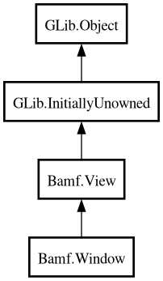

Window
Object Hierarchy:

Description:
[
CCode ( type_id =
"bamf_window_get_type ()" ) ]
public class Window :
View
Content:
Creation methods:
Methods:
Signals:
Inherited Members:
All known members inherited from class Bamf.View
All known members inherited from class GLib.Object